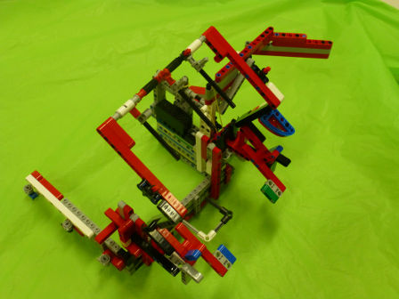
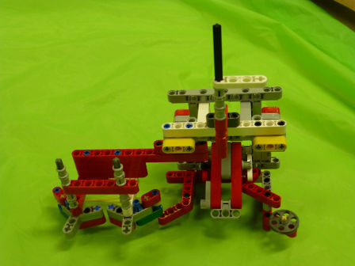
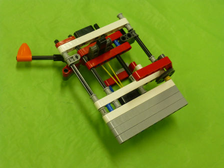
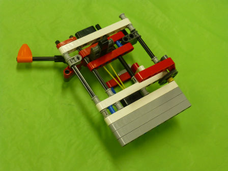
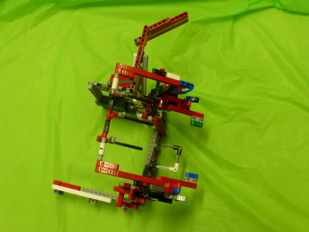
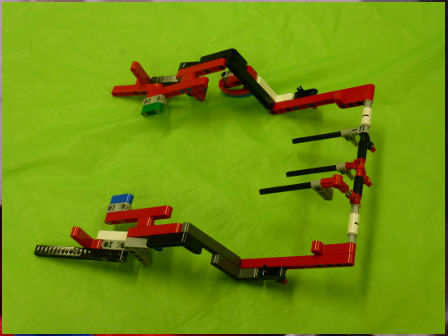
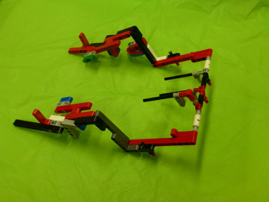
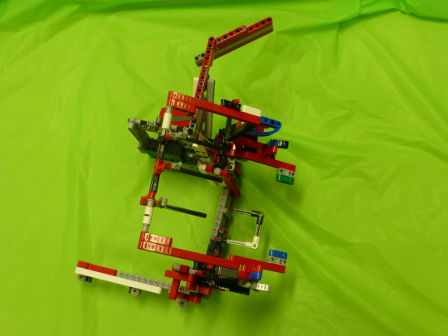
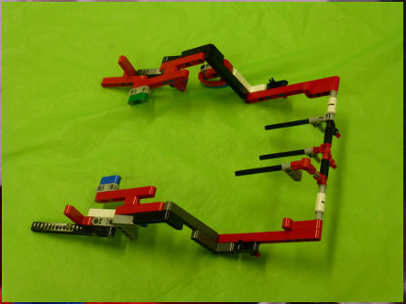
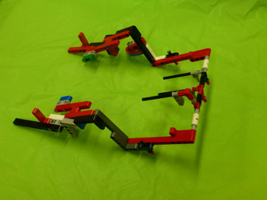

High-Level Strategy
For the last three FLL seasons the team has taken the approach of designing, building and programming two separate robots. The robots each have different features, strengths and weaknesses. While the team strives to create robots which are as repeatable as possible, it recognizes that 100% repeatability is unachievable with a single robot given varying robot game table conditions, mat sizes, mat colours and light conditions. The two-robot approach provides the team with a diversified approach which reduces reliance on just one robot. As most tournaments consist of 3 rounds (and perhaps a "for fun" sudden death play-off), the team alternates robots over the course of a tournament. To adhere with the robot game rules, we make sure that only one micro controller is in the robot game competition area for any one match.
Design Process
When designing our base robot, we establish criteria at the outset, such as desired footprint, height, balance, drivetrain, sensors to be used, user interface, etc. to arrive at a working prototype. We also strive to design and build a base robot which is robust and which features a frame around the chassis to provide structural rigidity as well as means to square up against walls and mission models. After creating a working prototype, we design attachments keeping in mind that these attachments need to be easy to install and remove, robust, and both passive and multipurpose whenever possible. From testing the prototype base robot and the attachments, we make revisions to our work in order to combine and speed up missions and increase repeatability to achieve maximum efficiency. By the end of the season, our attachments will often be in their fifth or sixth iteration.


Examples of tests experiments used
Finding the right Light Sensors
When first designing our robot we wanted to make sure that all the light sensors were the same. What we mean by that is the light sensors all have a small difference in reading because of manufacturing variabiltys. If you were to put two light sensors on the same line then they would get a small difference in reading. To make sure that all our light sensors had about the same reading we comletley shielded ten light sensors to eliminate the variable of ambient light\ the took not of what the reading was for each of the light sensors on black , white, and green. We then found the four light sensors which have the closest reading to eachother and used those four light sensors on the robot.
Pics of Light Sensor Tests
Making sure the Robot goes straight
The move blocks that come with the EV3 software (Move Tank and Move Steering) are very unreliable. Although they do come with a built in error correction program they still cannot move staright. In order to test that we set a designated starting spot for the robot and then we woudl run it for a certain distance until it hit the wall on the other side of teh table. We ran the robot tens of times and found that each time it would end up in a differemt spot on the other side of the table. Each time it would be atleast one inch away from the previous run. Then, we made our own error corrected move block (which you can read about in the programming section of the website). We conducted the exact same experiment using our new block and found that there was much less error and it would consistantly end up in the same spot.
Robot and General Strategy
- Maximize points per second (i.e. minimize time in base and try to complete as many missions in as short of a time as possible) combine missions based on proximity and attachment used (see diagram below)
- Use an aiming jig to precisely aim the robot in base
- Use reference points on the mat (lines, wall, and mission models)
- Not use leave-behind attachments anymore due to the junk penalty
- Follow the wall with guide wheels when possible to go straight
Scoring Table
| Zone | Missions | Points | Time in Base Before Mission | Robot Running Time | Total Mission Time | Clock at End of Mission | Points per Second |
|---|---|---|---|---|---|---|---|
| Zone 1 | Changing Conditions,Engagement, 2 tics, Loop, Cloud | 70 | 0 | 12 | 12 | 0 Min 12 Sec | 5.8 |
| Zone 2 | Robotics Arm, Right Senses, Reverse Engineering, Soccer, Camera | 205 | 7 | 75 | 82 | 1 Min 34 Sec | 2.5 |
| Zone 3 | Door, Spin Search Engine | 30 | 6 | 9 | 15 | 1 Min 49 Sec | 2.0 |
| Zone 4 | Collect Search Engine Loop | 45 | 5 | 7 | 12 | 2 Min 1 Sec | |
| Zone 5 | 6 Loops on Project based Learning, Apprenticeship in circle | 95 | 13 | 7 | 20 | 2 Min 21 Sec | 4.8 |
| Total | 530 | 31 | 110 | 141 | 2 Min 21 Sec | 3.8 |
Our Base Robot
Our base robot is VERY Robust and compact with a frame for strength We also have four light sensors, for MAXIMUM FLEXIBILITY, with shielding from ambient light The robot has sliders to keep the robot steering neutral and has narrow, and hard wheels for more accuracy in both straight movements and turns. However, we sacrifice some accuracy due to our large diameter wheels which amplify the error associated with the rotation sensors.
Attachment Details
| Name of Attachment | Description | Picture |
|---|---|---|
| Door Opener | This attachment uses stored energy from an elastic band to open the door. When the front arm is pushed inwards, the elastic band will contract and slap down the handle of the door, thereby opening it. This attachment also has a flag that will be raised when it has to be reset. When running the mission, we have an aiming jig to align the robot in the same position each time. |  |
| Loop Delivery Arm | This is an arm that will hold all the loops collected during the match and drop them onto the project-based learning scale. The arm also has a physical stopper to prevent it from over rotating and a door opener in the case the door mission does not work. |  |
| Apprenticeship Model Delivery Arm | This is a drop-in attachment that will deliver the apprenticeship model in the white circle around the project-based learning scale. |  |
| Key Mission Attachment | This is a passive attachment that accomplishes the changing conditions, engagement, and cloud models as well as picking up the loop. The attachment is a frame around the robot and attached to it are guide wheels. The cloud key is dropped off at the model when activated. |  |
| Robotic Arm and Reverse Engineering Basket Attachment | This attachment is passive and drops the robotic arm insert into the model and catches the loop. As well, the attachment has a elastic band-powered one way latch to capture the reverse engineering basket. |  |
| Search Engine Loop Attachment | This attachment retrieves the proper coloured loop from the search engine mission model. The one way latch can be secured into 3 different positions: on the left (to get the yellow loop), in the middle (to get the blue loop) or on the right (to get the red loop). |  |
| Soccer Ball Launcher | This is an arm attached to the A-motor that launches the ball into the goal and takes the loop from the Using the Right Senses model. |  |
Videos
Pictures


 

 




